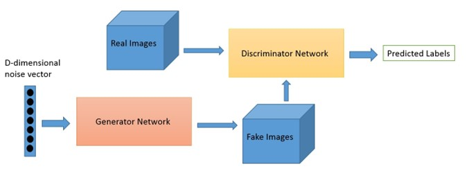
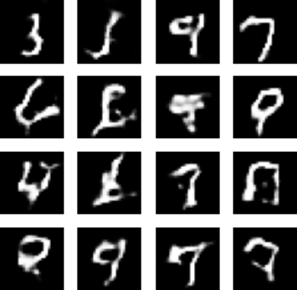
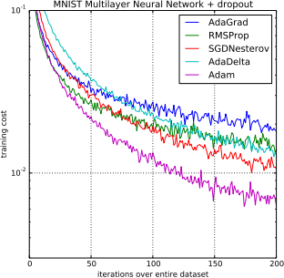
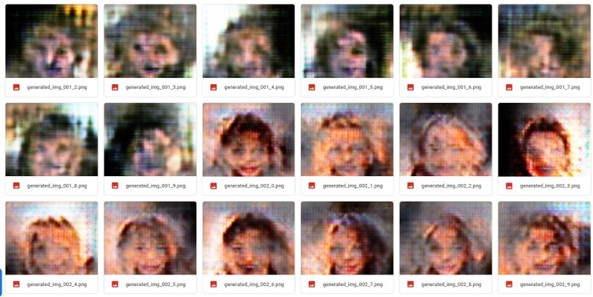

A generative adversary network (GAN) consists of two neural networks: a generator and a discriminatory model. The discriminatory model is trained using a convolutional neural network (CNN). What makes this a adversary network is that the generator is going to produce images (that start out random) and the discriminatory model is going to give a Boolean return, if the image is real or not. The weights of the GAN are adjusted based on the results the discriminatory model gives.See image 1 for a visual representation of a GAN model.
Image 1: DCGAN model
For this project I started by making a AI algorithm that could generate handwritten numbers. This was done by training the model on the MNIST dataset, which consists of 70.000 handwritten number images.
Image 2: Result generated numbers
I wanted to compare the models optimization performance, for this I compared multiple optimizers with eachother. Which showed that Adam was the best optimizer, see image 2.
Image 3: Comparing optimizers
To increase the difficulty of the AI algorithm. I wanted to generate colour images, for this is used the CelebA database. This database consists of 202,599 images. It took my laptop four hours to train on 4 epochs. With a supercomputer the results would be better. The results where 18 generated faces, see image 4.
Image 4: Generated CelebA images